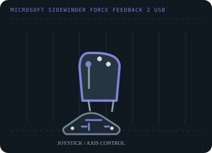

[ JOYSTICK CONTROLLERS // IDENTIFIED COMPONENT ]
Microsoft SideWinder Force Feedback 2
USB desktop joystick with twist rudder, throttle, programmable buttons and active force feedback.

MODEL IDENTIFICATION: Microsoft SideWinder Force Feedback 2 USB joystick; distinguish it from the earlier game-port Force Feedback Pro. Published family information does not establish the revision or condition of an individual unit; compare its label and included parts with the linked documentation.
Model specifications
| Catalog subcategory | Joystick controllers |
|---|---|
| Exact model / identifier | Microsoft SideWinder Force Feedback 2 USB joystick; distinguish it from the earlier game-port Force Feedback Pro. |
| Axes and buttons | Pitch and roll on the stick, twist rudder, a throttle control, trigger and programmable buttons/hat. The force-feedback motor can reproduce game effects and centering forces. |
| Physical interface | USB game-controller interface with force-feedback effects through DirectInput; not a game-port adapter model. |
| Sensors and protocol | Position axes are reported as analog joystick controls; force-feedback commands are host-driven. The cited Microsoft API documentation specifies the protocol, not the physical axis sensor type. |
| Power | USB-connected force-feedback unit; verify the label and original manual for the specimen before substituting any external power supply. |
| Host OS and driver compatibility | Designed for Windows with Microsoft SideWinder software and DirectInput-era titles. Standard USB recognition may be available on newer Windows, but legacy configuration software and individual force effects are not guaranteed. |
Setup and calibration
Connect directly to a USB port, run the operating-system controller test, and calibrate stick center, twist and throttle travel. Confirm the game supports DirectInput force feedback before relying on effects.
Keep the operating-system baseline calibration and in-game sensitivity/dead-zone settings separate. Record the OS, driver, firmware and game used to test each axis and button.
Preservation and service notes
Inspect the USB cable, stick return, throttle travel and force-feedback self-test. Keep the unit clear while powered because the grip actively moves; preserve the original software and manual with the device.
For an archive specimen, photograph the model label, note all included cables/adapters and distinguish directly observed behavior from published specifications.
References and support
- SideWinder Force Feedback 2 user manual — ManualsLibScanned model manual and connection/setup reference.
- DirectInput force-feedback overview — Microsoft LearnMicrosoft documentation for the host-side force-feedback protocol used by Windows games.
Vendor support pages and manual downloads can change. Preserve the applicable manual and installer with a legacy host image, and verify the printed revision before service.